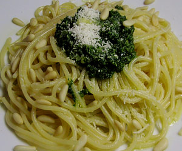

Petersilien-Pesto
4,5 von 64 Bund Petersilie, 1 Dl bestes Olivenöl, Salz, Pfeffer und Parmesan mit dem Stabmixer vermengen. Mit Spaghetti servieren.

4 Bund Petersilie, 1 Dl bestes Olivenöl, Salz, Pfeffer und Parmesan mit dem Stabmixer vermengen. Mit Spaghetti servieren.

Montagsplausch Nr. 160. Der Abend hiess «DVD-Night».